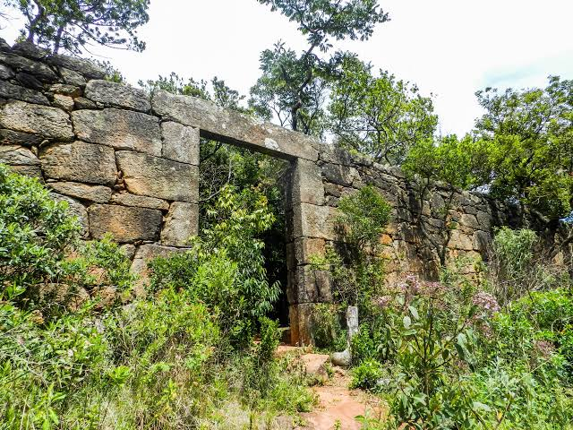
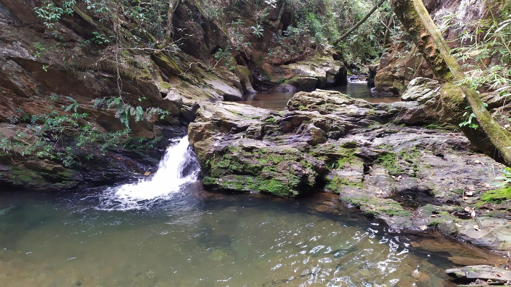
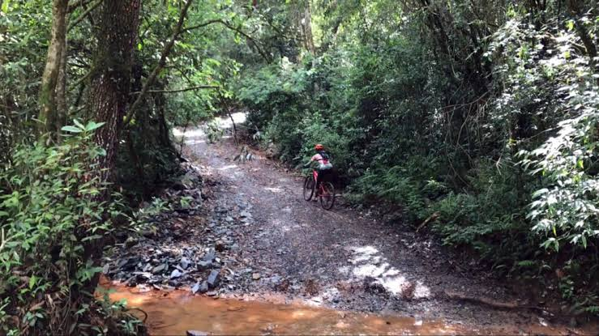
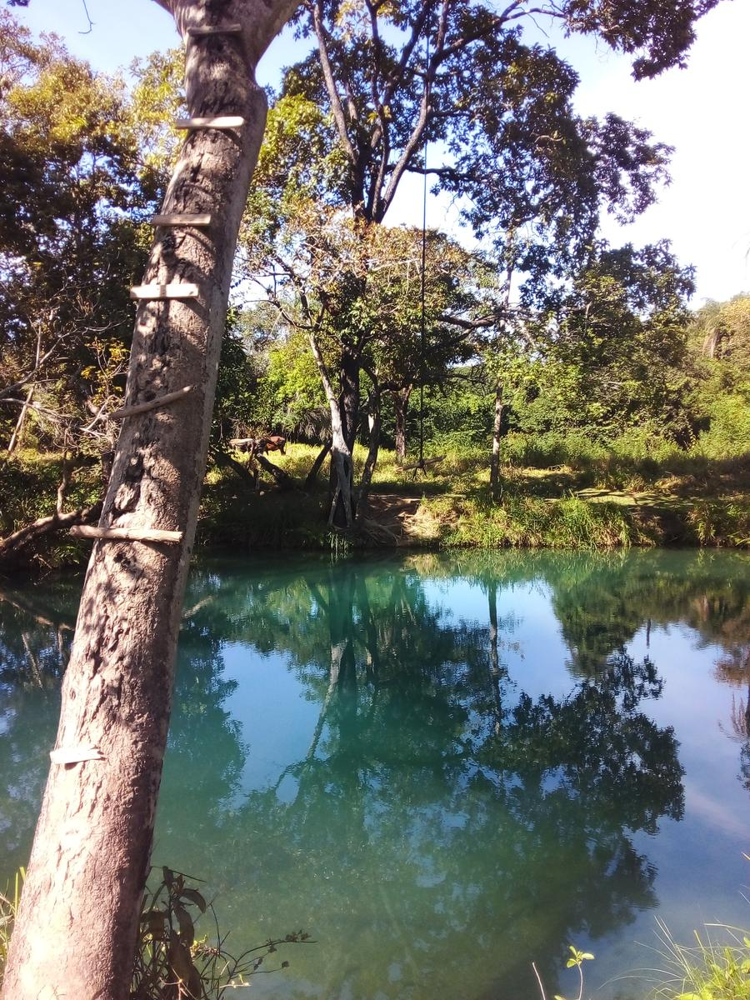
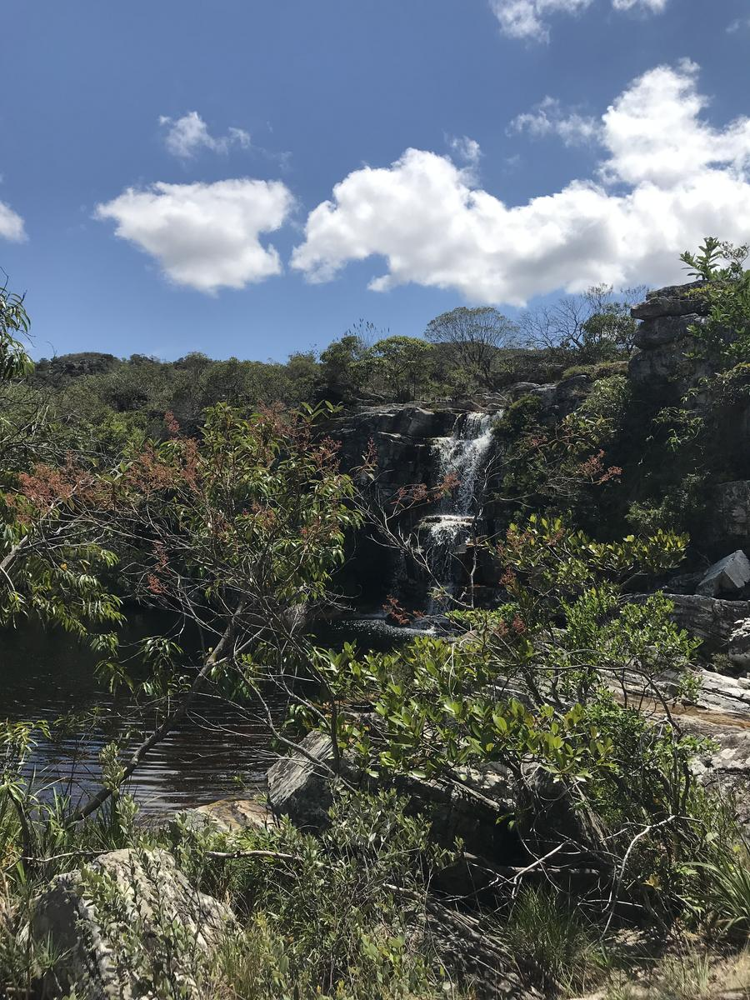
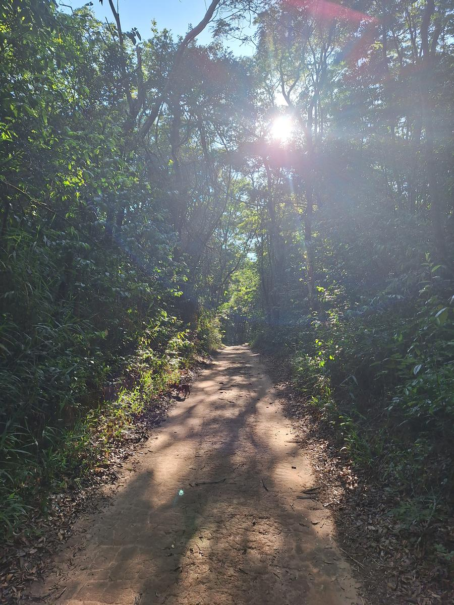
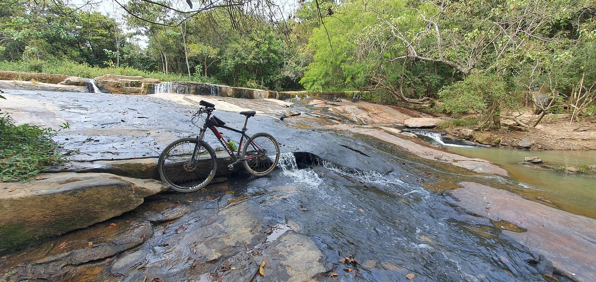
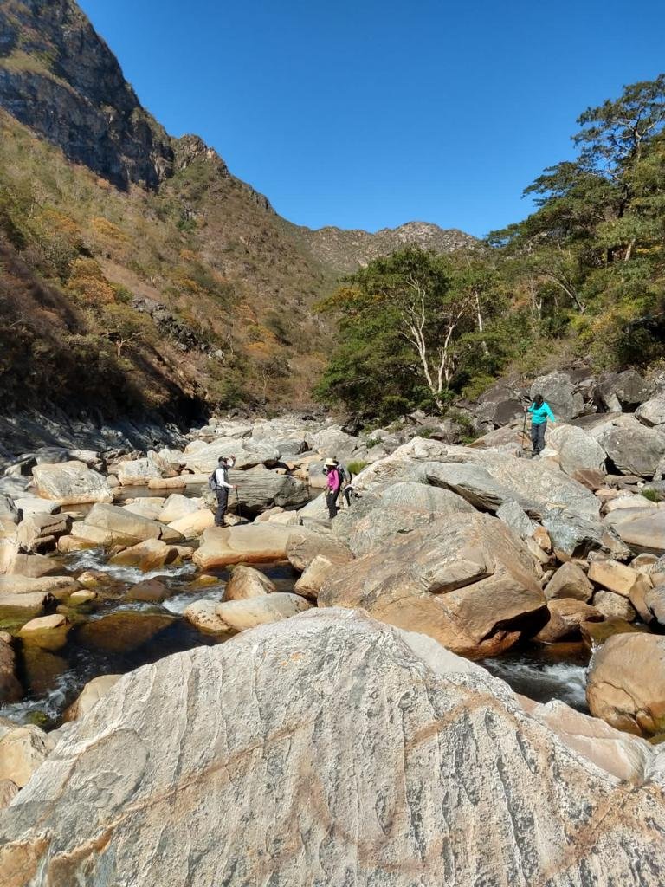
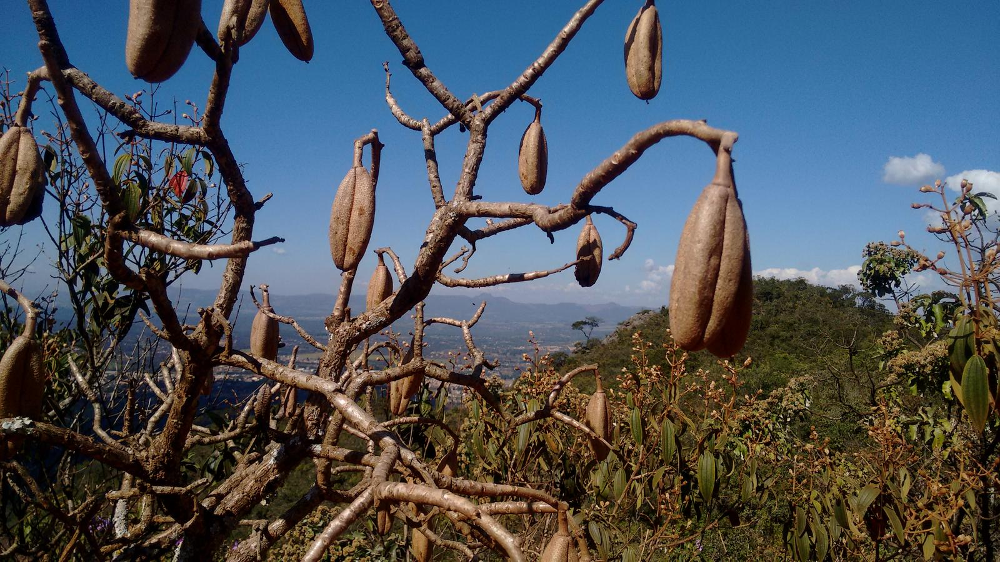
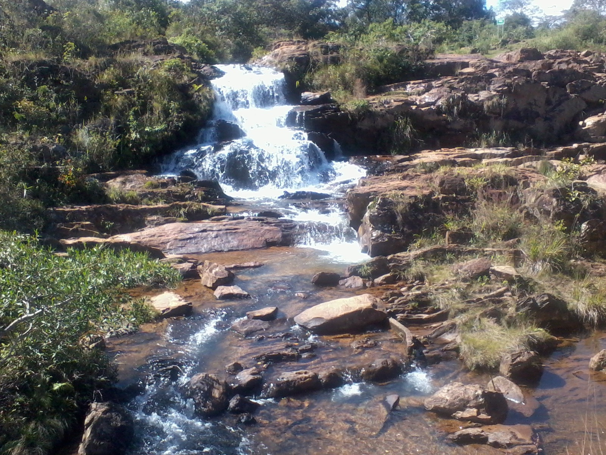

Galeria de Imagens
Descubra as belezas naturais que Minas Gerais tem a oferecer. Nossa galeria reúne paisagens de tirar o fôlego, cachoeiras cristalinas e momentos inesquecíveis capturados nas melhores trilhas da região. Deixe-se inspirar e comece a planejar sua próxima conexão com a natureza.

Forte de Brumadinho – Brumadinho
Uma trilha que mistura história e natureza em um só caminho. O percurso até o Forte de Brumadinho revela paisagens abertas, muito verde e aquele clima de descoberta a cada passo. Ideal para quem gosta de caminhar explorando cenários diferentes e sentir a conexão com o passado em meio à natureza.
Ver localização
Retiro das Pedras e Cachoeira da Ostra – Nova Lima / Casa Branca
Essa trilha é um verdadeiro convite para se desconectar e aproveitar o melhor da natureza. Entre mirantes incríveis em Casa Branca e a beleza escondida da Cachoeira da Ostra, o caminho surpreende do início ao fim. Perfeito para quem busca vistas deslumbrantes e um momento de paz longe da cidade.

Travessia Sabará x Raposos – Sabarabuçu / Estrada Real
Uma experiência marcante para quem gosta de aventura de verdade. Essa travessia percorre trechos históricos da Estrada Real, cercados por montanhas e paisagens típicas de Minas. Cada parte do trajeto traz uma sensação de liberdade e conquista, tornando a caminhada ainda mais especial.

Poço Azul (Lagoa Santa-MG)
Mais do que uma trilha, esse passeio é uma imersão em beleza natural. Caminhar pelo centro de Lagoa Santa e ao redor da lagoa é uma experiência leve, com paisagens tranquilas e cheias de charme. Ideal para quem quer relaxar e apreciar o ambiente sem pressa.

Circuito Taquaraçu de Minas x Cachoeira da Grota
Uma trilha cheia de energia e contato direto com a natureza. O trajeto em loop proporciona diferentes cenários ao longo do caminho, culminando em uma bela cachoeira na Grota. Perfeita para quem gosta de aventura com recompensa refrescante no final.

Trilha Esmeraldas – Esmeraldas Bike Park
Para quem curte movimento e natureza, essa trilha é a escolha certa. Localizada no Bike Park de Esmeraldas, ela oferece um percurso dinâmico, cercado por muito verde e com aquele clima perfeito para uma caminhada ativa ou pedal. Um ótimo lugar para sair da rotina e se desafiar.

Cachoeira do Couto – Saraiva (Betim)
Uma trilha que leva a um verdadeiro refúgio natural. O caminho até a Cachoeira do Couto é tranquilo e envolvente, com o som da natureza acompanhando cada passo. Ao chegar, a queda d’água encanta e convida para um momento de descanso e contemplação.

Cachoeira Rio de Pedra
Um destino perfeito para quem busca natureza preservada e paisagens marcantes. A trilha até a Cachoeira Rio de Pedra revela um cenário bonito e acolhedor, ideal para relaxar e aproveitar o contato com a água e o verde ao redor.

Serra do Elefante e Cachoeira – Mateus Leme
Uma trilha que impressiona pelas vistas e pela sensação de liberdade. A subida na Serra do Elefante recompensa com paisagens incríveis, enquanto a cachoeira ao longo do percurso traz aquele toque especial de tranquilidade. Um passeio completo para quem ama natureza e aventura.

Serra da Gandarela - Rio Acima
Uma trilha que impressiona pelas vistas e pela sensação de liberdade. A subida na Serra da Gandarela recompensa com paisagens incríveis, enquanto a cachoeira ao longo do percurso traz aquele toque especial de tranquilidade. Um passeio de maior dificuldade, mas extremamente recompensador.